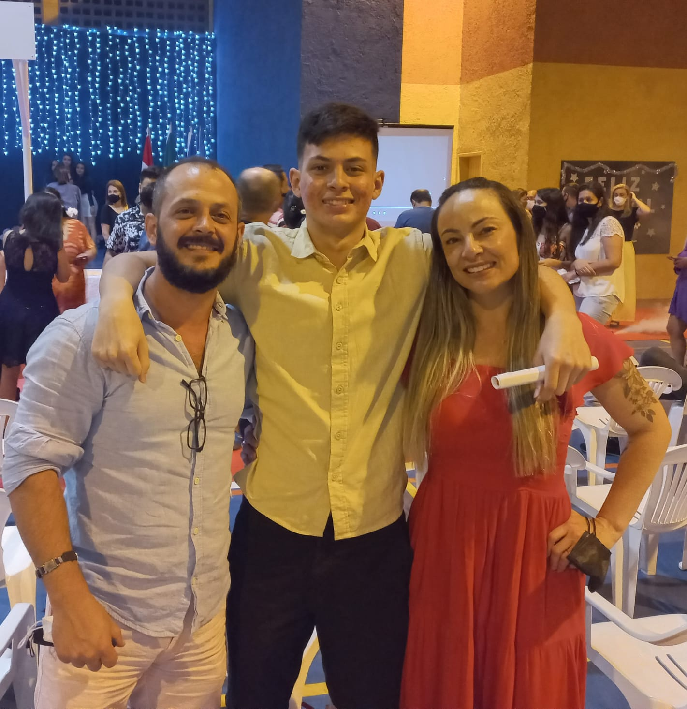

Me chamo Bruno Marquesi de Macedo,nasci no dia 21/07/2006 e estou cada dia mais perto de completar meus 16 anos de vida.Nasci e moro em Joinville SC,conhecida por ser uma cidade industrial,tem poucos pontos turísticos,meio poluída e de aparência duvidável,porém gosto daqui e não pretendo me mudar tão cedo.
Vista do mirante de Joinville
Sou filho de pais separados,porém com guarda compartilhada,então tenho uma relação muita boa e saudável com eles (idem para a deles). Morei minha vida inteira com o meu pai, indo pra casa da minha mãe de duas em duas semanas, entretanto , desde que comecei a estudar no IFC, o jogo virou, só vejo ele de duas em duas semanas e moro com ela.
